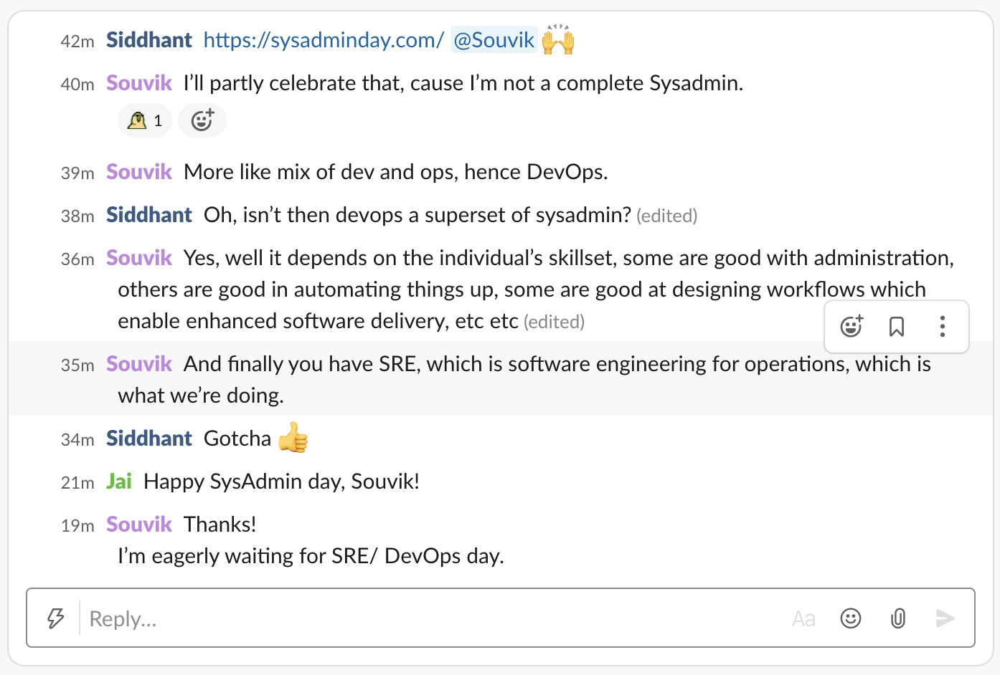

Site Reliability Engineer/DevOps Appreciation Day [31st July]
Your builds are not breaking, your dev environment actually mimics the production environment, and production web application is running smoothly. You know who to thank -- that awesome site reliability and development operations engineer in your team.
Happy SRE/DevOps Day
This is the day we thank the rockstars in our teams for ensuring everything runs so smoothly. Now that you realise that your SRE/DevOps people are rockstars, here's how you can thank them:
- Cake & Ice cream
- Pizza
- Cards
- Gifts
- Words of gratitude
- Custom t-shirts celebrating the epic greatness of your rockstar
- Balloons
- Confetti
Show your appreciation
From the original website of sysadminday.com:
> Friday, July 31, 2020, is the 21st annual System Administrator Appreciation Day. On this special international day, give your System Administrator something that shows that you truly appreciate their hard work and dedication. (All day Friday, 24 hours, your own local time-zone).
Thank them, send them gifts, treat them to something. And, of course, share the photos.
Inspiration
SysAdminDay.com] of course.
Also, 